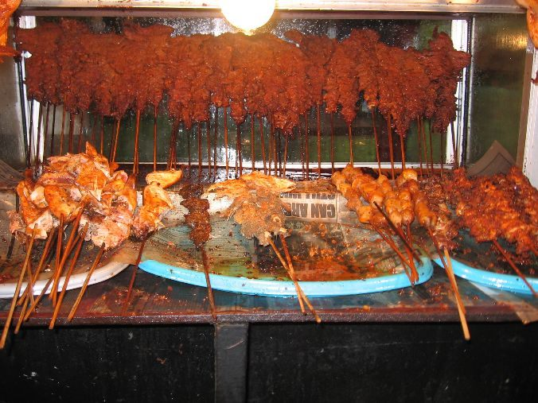

Make vegetables welcome
Add leafy greens, peppers, or other seasonal vegetables to soups, stews, and rice dishes when they suit the recipe.
More than what is on the plate
Nigeria is home to many communities, languages, and cooking traditions. There is no single way to cook Nigerian food—every family and region brings its own knowledge to the table.


GATHERA place at the table
Across Nigeria, food can mark celebration, welcome a guest, or bring family together after a long day. A shared dish is an invitation to pause, talk, and enjoy one another's company.
Recipes travel and change. Ingredients vary by season and place, and cooks adapt methods to what they have. Learning about a dish means listening to the people and communities who make it—not assuming one version speaks for everyone.
Explore dishes from our kitchenSmall choices, delicious food
Add leafy greens, peppers, or other seasonal vegetables to soups, stews, and rice dishes when they suit the recipe.
When it works for the dish, try steaming, grilling, or baking. Keep the methods and textures that make a meal feel like home.
Build flavor with onion, garlic, ginger, herbs, and spices. Taste as you go and adjust salt to your preference.
Pair a favorite staple with vegetables and a protein source that works for you. Needs and portions differ from person to person.
Your turn
Share a Nigerian dish you'd like to see. Suggestions are saved only in this browser on this device.